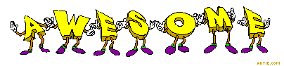

rimekin (04-16-2001 23:59:42)


Hi! I'm Braulio. Welcome to my little corner of the internet!
I'm a passionate collector of music, games, and all things retro. This website is my digital scrapbook where I share my interests.
Here are some of my favorite bands/artists:

I'm passionate about physical media, especially CDs! There's something special about creating the perfect mixtape.
| My CD Burning Setup | |
|---|---|
| Software | Exact Audio Copy (EAC), Nero Burning ROM |
| Hardware | Pioneer BDR-XD08 burner, Philips-MC235B for playback |
| Media | CMC Pro for important burns |
My CD collection includes:

When I'm burning CDs, I support artists by buying high-quality music legally from:
Why I love Qobuz:
Why I buy on Qobuz:
When I'm not listening to music, I enjoy this:
| Games | Movies |
|---|---|
|
|

rimekin (04-16-2001 23:59:42)
~*~virtualpopstarnina~*~ (05-11-2003 04:20:00)
wuz up. dis is a cool website B )